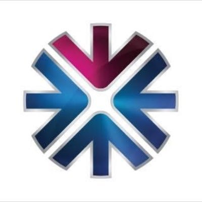
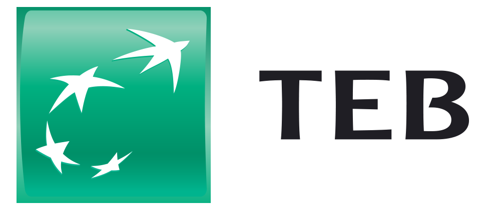

Hazine ve nakit yönetimi
Grup nakdini tek ekranda görün, nakit sıkışmasını haftalar öncesinden fark edin. Elinizde ne kadar para olduğunu değil, ne kadarını gerçekten kullanabileceğinizi gösterir.
Toplam bakiye değil, kullanabileceğiniz nakit
Bakiyeler gün içinde birden çok kez okunur. Bloke tutar, teminata verilmiş bakiye ve gayrinakdi limit toplamdan düşülür — kullanılabilir nakit bunların sonrasında kalan tutardır.
Okunamayan bir değer sıfır sayılmaz: o hesap toplamın dışında bırakılır ve hangi hesabın neden çıkarıldığı tutarın altında yazar.

QNBNakit akış tahmini
Tahmin ufkunu siz seçersiniz — haftalık, aylık ya da çeyreklik. Tahmin üç kaynaktan beslenir: bilinen yükümlülükler (kredi taksitleri, vadesi gelen çek ve senetler, planlı ödemeler), geçmiş hareket kalıpları ve elle girilen kalemler.
Gerçekleşen ve tahmin ayrı çizilir; tahmin çubukları tarama desenle işaretlenir. Varsayım değiştiğinde hangi dönemin neden değiştiği görünür.
Sweep kurulumu, grup içi kredi ve sözleşmesel kur
Sözleşmesel kur beyan edilmemişse tutar piyasa kuruna düşürülmez — iki şirketin mutabakatı her gün farklı çıkmasın diye.
Bakiye ve hareket verisi hazır bağlantılarla gelir



Grup nakdinizi tek ekranda görmek ister misiniz?
45 dakikalık görüşmede kendi hesap yapınızla kurulum akışını gösteriyoruz.